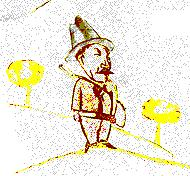
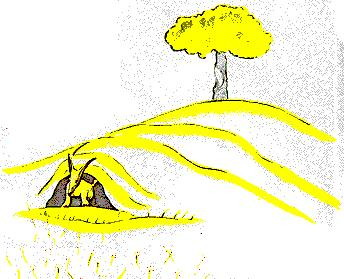
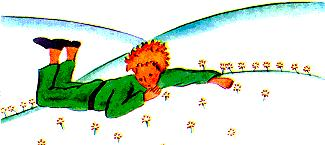

XXI
Is ag an phointe sin a tháinig an madra rua ar an láthair:
- Dia duit, arsa an madra rua.
- Dia agus Muire duit, arsa an prionsa beag go béasach.
Thiontaigh sé thart agus ní raibh dada le feiceáil.
- Tá mé anseo, arsa an guth, faoin chrann úll...
- Cé thú féin? arsa an prionsa beag. Nach tú atá dóighiúil...
- Madra rua is ea mise, arsa an madra rua
- Gabh anall agus bí ag súgradh liom, a d'iarr an prionsa beag
air. Tá mé dubhach gruama...
- Ní féidir liom dul ag súgradh leat, arsa an madra rua. Níl mé
clóite.
- Cad é sin a deir tú? arsa an prionsa beag.
Ach chuimhnigh sé air féin agus dúirt sé arís:
- Cad is ciall le “clóite”?
-Ní as an áit seo duitse, arsa an madra rua. Cad é atá á lorg agat?
- Tá mé ar lorg daoine, arsa an prionsa beag. Cad é is ciall le
'clóite'?
- Na daoine seo, arsa an madra rua, tá gunnaí acu agus bíonn
siad ag seilg. Is mór an crá croí é! Agus coinníonn siad cearca
fosta. Sin an rud is mó is spéis leo. An bhfuil cearca á lorg agat?
-Níl, arsa an prionsa beag. Cairde atá á lorg agam. Cad é is ciall
le “clóite”?
-Is rud é a ndéantar dearmad air rómhinic, arsa an madra rua.
Is é is ciall leis “snaidhm a chur...”
- Snaidhm a chur?
- Cinnte, arsa an madra rua. Chomh fada agus a bhaineann
liomsa, níl ionat go fóill ach gasúr beag ar aon dul le céad míle
gasúr beag eile. Agus níl gá ar bith agam leat. Agus níl gá agatsa
liomsa ach oiread. Dar leatsa nach bhfuilionam ach madra rua ar
aon dul le céad míle madra rua. Ach má dhéanann tú misea chló,
beidh gá againn lena chéile. Ní bheidh do leithéid eile ar
domhan, dar liomsa. Ní bheidh mo leithéid eile ar domhan, dar
leatsa...
- Tá tús tuigbheála agam, arsa an prionsa beag. Tá bláth
ann...Creidim go bhfuil mé clóite aicise...
- Is féidir sin, arsa an madra rua. Feiceann tú gach aon sórt
rudaí ar an Talamh...
-Ó, chan ar an Talamh atá sí, arsa an prionsa beag.
Tháinig cuma na fiosrachta ar an mhadra rua:
- Ar phláinéad eile atá sí?
- Is ea.
- An bhfuil lucht seilge ar an phláinéad sin?
- Níl.

- Tá sin spéisiúil! Agus an bhfuil cearca ann?
- Níl.
- Níl rud ar bith foirfe, arsa an madra rua, ag ligean osna dó.
Ach tharraing an madra rua an scéal anuas arís:
- Is liosta leadránach an saol atá agam. Bím sa tóir ar chearca,
bíonn daoine sa tóir ormsa. Tá na cearca goléir cosúil lena chéile,
agus tá na daoine go léir cosúil lena chéile. Tá mé cineál tuartha
de. Ach má dhéanann tusa mé a chló, beidh mo shaol mar a
bheadh sé lán gréine. Beidh fuaim coiscéime ar m'aithne atá
difriúil ó gach coiscéim eile. Coiscéim dhaoine eile, cuireann siad
siar ar ais faoin talamh mé. Ach do choiscéimse, glaofaidh sí orm
amach as mo bhrocach, mar a bheadh fonn ceoil ann. Agus
chomh maith leis sin féach! An bhfeiceann tú goirt an arbhair
ansin thíos uait?
Ní ithimse arán. Níl maith ar bith sa chruithneacht domsa. Na
goirt arbhair úd, ní thugann siad rud ar bith chun cuimhne

domsa. Agus is bocht an scéal é sin! Ach tusa, tá gruaig ar dhath
an óir agat. Beidh sé iontach mar sin nuair a bheas mé clóite agat!
An chruithneacht sin, atá ar dhath an óir, cuirfidh sí tusa i
gcuimhne dom. Agus beidh dúil agam i bhfuaim na gaoithe sa
chruithneacht...
Thita thost ar an mhadra rua agus bhreathnaigh sé tamall fada
ar an phrionsa beag:
- Más é do thoil é...déan mé a chló, ar seisean.
- Níor mhiste liom, arsa an prionsa beag, ach níl mórán ama
agam. Ní mór dom cairde a aimsiú, agus aithne a chur ar a lán
nithe.
- Ní chuireann tú aithne ach ar na nithe a chlónn tú, arsa an
madra rua. Na daoine anois, níl an t-am acu níos mó aithne a chur
ar aon ní. Ceannaíonn siad rudaí réamhdhéanta ó lucht díolta.
Ach ó tharla nach bhfuil aon lucht díolta cairde ann, níl cairde

ar bith ag na daoine níos mó. Má tá cara de dhíth ort, déan mé
a chló!
- Cad é is gá a dhéanamh? arsa an Prionsa beag.
- Ís gá foighid mhór a bheith agat, a d'fhreagair an madra rua.
Suífidh tú síos ansin, giota maith uaim, san fhéar. Beidh mise ag
faire ort as eireaball mo shúile agus ní déarfaidh tusa dada. Is cúis
mhór míthuigbheála an chaint. Ach gach lá féadfaidh tú suí
beagán níos cóngaraí dom...
An lá arna mhárach tháinig an prionsa beag ar ais.
-B'fhearr é dá bhfillfeá ag an am céanna, arsaan madra rua leis.
Má thagann tú, mar shampla, ar a ceathair a chlog tráthnóna,
beidh lúcháir ag teacht ormsa timpeall a trí a chlog. Dá fhaide a
théann an t-am ar aghaidh, is ea is mó lúcháir a bheas orm. Le
teacht an cheathair, beidh mé ag éirí corrach agus imníoch;
beidh afhios agam go bhfuil luach ar an lúcháir a chaithfear a íoc.
Ach má thagann tú ag am ar bith is mian leat, ní bheidh a fhios
agam cén uair le mo chroi a chur i gcóir... Theastódh deasghnáth.
- Cad is deasghnáth ann? arsa an prionsa beag.
-Sin rud eile a ligtear i ndearmad rómhinic, arsa an madra rua.
Is é an rud é a dhéanann lá amháin difriúil ó laethanta eile, uain
amháin ó uaineacha eile. Lucht mo sheilge, mar shampla, tá
deasghnáth dá gcuid féin acu. Téann siad ag rince Déardaoin le
cailíní an bhaile. Mar sin is lá iontach é an Déardaoin! Téim
amach ag spaisteoireacht chomh fada leis an fhíriúin. Dá dtéadh
an lucht seilge ag rince ar a rogha lá, bheadh na laethanta go léir
ar aon dul le chéile, agus ní bheadh laethe saoire ar bith agamsa.
Mar sin, rinne an prionsa beag an madra rua a chló.
Agus nuair a bhí uair na himeachta buailte leo:
-Á, arsa an madra rua...Beidh mé ag caoineadh.
- Ort féin atá an locht, arsa an prionsa beag, ní raibh mírún ar
bith agam duit, ach ní dhéanfadh rud ar bith thú ach go ndéanfainn
thú a chló...
- Cinnte, arsa an madra rua.
- Ach beidh tú ag caoineadh! a deir an prionsa rua.
- Cinnte, arsa an madra rua.
- Mar sin ní fearrde thú é!
- Is fearrde, arsa an madra rua, is fearrde mé dath na
cruithneachta.
Ansin dúirt sé fosta:
- Gabh ar ais agus amharc ar na rósanna. Tuigfidh tú nach
bhfuil an dara rós ar domhan mar do rós féin. Tiocfaidh tú ar ais
le slán a fhágáil agam, agus bronnfaidh mé rún ort.
D'imigh an prionsa beag leis a dh'amharc ar na rósanna.
- Níl sibh cosúil ar chor ar bith le mo róisín féin, ní dada sibh
go fóill. Níor chlóigh aon duine sibh, ná níor chlóigh sibhse aon
duine. Tá sibh mara bhí mo mhadra rua. Ní raibh ann ach madra
rua ar aon dul le céad míle dá leithéid. Ach rinne mé cara de, agus
anois níl a leithéid eile ann ar domhan.
Agus bhí na rósanna míshásta go leor.
- Tá sibh dathúil ach tá sibh folamh, ar seisean leo arís. Ní
bhfaigheadh aon duine bás ar bhur son. Cinnte, mo róisín féin,
mheasfadh an gnáthdhuine ag dul thart go bhfuil sí cosúil libh.
Ach is tábhachtaí í intif éin ná sibhse go léir le chéile, as siocair gur
léise a choinnigh mé uisce. As siocair gurb ise a chuir mé faoin
chlogad gloine. As siocair gur dise a thug mé foscadh leis an
scáthlán. As siocair gurb uirthise a mharaigh mé na cruimheanna
(ach amháin a dó nó a trí de na feileacáin).
As siocair gur éist mé léi nuair a bhí sí ag gearán, nó ag
déanamh gaisce, nó fiú amháin agus í ina tost. As siocair gurb í mo
róisín féin í.
Agus tháinig sé ar ais chun an mhadra rua:
- Slán leat, ar seisean...
- Slán leat, arsa an madra rua. Seo é mo tún duit. Tá sé an-
simplí:is leis an chroí is fearra tímid. Na rudaí is bunúsaí amuigh,
ní féidir leis na súile iad a fheiceáil.
- Na rudaí is bunúsaí, ní fheiceann na súile iad, a dúirt an
prionsa beag arís, lena choinneáil ina chuimhne.
- Is é an t-am a chaith tú le do rós a dhéanann do rós chomh
tábhachtach sin.
- Is é an t-am a chaith mé le mo rós...a deir an prionsa beag go
beo, lena choinneáil ina chuimhne.
- Tá dearmad déanta ag na daoine ar an fhírinne sin, a deir an
madra rua. Ach níor chóir duitse dearmad a dhéanamh air. Beidh
tú freagrach i gcónaí as an rud atá clóite agat. Tá tú freagrach as
do rós.
-Tá mé freagrachas mo rós...a dúirt an prionsa beag as an nua,
lena choinneáil ina chuimhne.